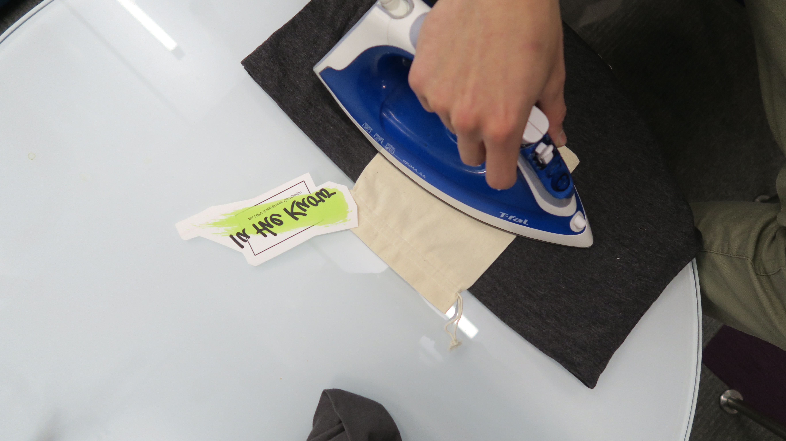
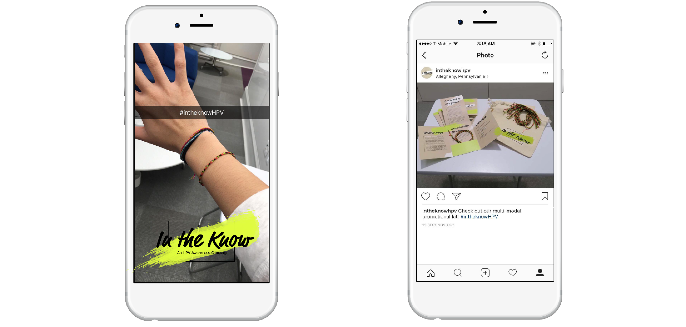

Designed “In The Know”, a multi-modal promotional kit that combines physical and virtual elements to increase HPV awareness.
Dates: November 2016 - December 2106
Team: Scott Dombkowski and Denise Nguyen
Today, over 25% of the US population has HPV and 27 thousand people are diagnosed with a HPV-related cancer each year. Human Papilloma Virus (HPV) is different from most causes of cancer, since a vaccine can protect you from its most common strains. However the vaccine’s adoption rates are low. The Allegheny County Health Department (ACHD) tasked my MA Visual Communication Studio class with generating ideas on how to improve vaccine rates. My team’s solution, “In the Know”, is a visual communication system designed to increase adoption of the HPV vaccine in Allegheny County.
Reframing the Problem
After researching the problem space, we concluded that the biggest reason people aren’t getting the HPV vaccine is because of a lack of awareness. You can go online today and find a large amount of horror stories and misinformation on the HPV vaccine, that most parents can not ignore.
We also found that a percentage of parents are afraid to talk about HPV because of its connection to sex. With this information in hand, we realized that our immediate goal should be to raise awareness about HPV and the vaccination instead of trying to aim for a commitment to getting the vaccine (although that would be the ultimate goal).
Deciding on an Audience
For this project, we targeted high schoolers with our system. We believed high schoolers would be the perfect population because they are concerned with their future, looking for independence, socially connected, and starting to become sexually active. We also believed high schoolers could activate a network effect where younger students imitate the behavior of older students.
Concept Creation
We created an affinity map to come up with potential solutions, because of the number of potential solutions we came up with we decided to create a multi-modal kit.
We were further convinced to create a multi-modal kit when Dan Lockton talked to us about “Product Bundling”, especially since the bundle attracts people who wouldn’t be attracted to the product without the bundle. Our kit would provide the recipient with something they wanted (in our case, a bracelet), which in turn would allow us to give that same person something we wanted to give them (in our case, information about HPV).

Solution Affinity Map
Deciding on a Visual Tone
We decided to completely separate the “In The Know” identity from ACHD’s identity. We found ACHD’s tone to be too stark and professional to engage with a high schooler. We wanted the tone to be playful, yet informative but not too playful that the students would find it immature. The paintbrush theme throughout our elements was designed with the idea that high schoolers have the ability to paint their own canvas or future by making conscious decisions to protect their health.
Solution
To achieve our goal we designed, “In The Know”, a multi-modal promotional kit that combines physical and virtual elements to increase HPV awareness.
Physical Elements
The physical elements of the kit include a reusable bag with an informational packet and two bracelets.
The bag can be used for any number of purposes. We decided to limit the HPV messaging on the front of the bag so that it was reusable and students’ would not feel self-conscious about re-using the bag.
The informational packet inside the bag is designed to grab a high schooler's attention. The packet includes: info about HPV, HPV statistics, myths and facts, and how to start a conversation with your parents.
Inside the informational packet there are two homemade bracelets. These bracelets will be immediately identifiable as part of the In The Know campaign because of their original black, pink, and green pattern. The bracelet provides a tangible artifact that can be a conversation starter. When someone sees a person wearing the bracelet they might wonder what it is. Hopefully, the next time that same person sees the bracelet they will become more interested and start a conversation with the person wearing the bracelet. We also decided to provide two bracelets per kit. One to wear and one to give to a friend. We hope that this makes it easier for someone to start a conversation about HPV.

Bag Construction
Pamphlet Construction
In The Know Physical Kit
Virtual Elements
In addition to the physical elements, we also have virtual elements, which include a website, a mobile app, and a social media presence.
Our website and mobile app not only provide information on HPV, but also provide a medium to directly interact with. On both platforms, you can join the campaign. When you join, you instantly see an increase in the number of people who have joined the campaign. By seeing this increase, the student will feel as if they made their mark and are part of something larger than themselves.
We also would have accounts on all the major social media platforms high schoolers use. This comes in the form of Snapchat geofilters, Instagram posts, Facebook posts, or tweets. We also came up with a unique hashtag, #intheknowHPV, to be associated with our kit.
In The Know Desktop Demo
In The Know Mobile Demo

In The Know Snapchat Filter and Instagram Post
ACHD's Constraints
Throughout this process, we were aware of ACHD’s constraints. We attempted to create artifacts that would not be too expensive and difficult to produce. For example, the materials for eight bracelets could be purchased at Michaels for under $1. The functionality on the website and mobile app were also limited in terms of difficulty to implement so they would be inexpensive to produce.
Moving Forward
We came up with a number of potential ideas on how the “In The Know” campaign could be implemented.
The Health Department could organize pop up booths at certain family events around the city and, in schools, if possible.
Our kit could be a valuable tool for doctors and nurses in their offices. During a visit, a doctor or nurse could ask the patient if they want to know more about HPV. If they did, they could give them our kit.
Our website and mobile app would also have functionality so that kits could be ordered.
We also wanted to develop a way students could activate “word of mouth” with the kit. To achieve this, an “In the Know” student rep program could be created.
Selected students would become reps and share the campaign with their friends hopefully activating word of mouth throughout their school. With high school students eager to engage in leadership opportunities to enhance their college applications, our program would provide them with an opportunity to boost their application.
The student rep program would increase word of mouth and get young adults talking about HPV, their health, and how they could influence their own future. The student rep program would also work off of social proof, giving other students a reference point to what their peers were doing.